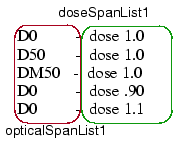
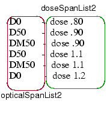
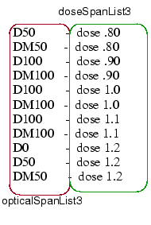

You issue the
LFD::PVband function once for each layer. This one function instructs
Calibre LFD to perform all the process variation experiments designed
for that layer.
To use a single invocation to instruct Calibre
LFD to process multiple experiments, you must pass in descriptions
of the process variation experiments in the form of opticalSpanLists
and doseSpanLists, which are arguments to the LFD::PVband function. When you need to apply
a bias to the original geometry during the PV-band generation step,
you must also supply the optional sizeSpanLists.
These lists contain one value for each focus
and dose pair:
The opticalSpanList contains the model
created for the specified focus.
The doseSpanList contains the dose.
The sizeSpanList contains the size of
the bias.
The resistSpanList contains the resist
model.
The etchSpanList contains the etch model.
Note: Experiments involving
double exposures require two opticalSpanLists, two doseSpanLists,
and two sizeSpanLists.
Procedure
- For each process variation
experiment, create a list of focus and dose combinations to be investigated.
Experiment 1 or
Subwindow 1
|
Experiment 2 or
Subwindow 2
|
Experiment 3 or
Subwindow 3
|
|---|
defocus 0 - dose
1.0
defocus 50 - dose 1.0
defocus -50 - dose 1.0
|
defocus 0 - dose
.80
defocus 50 - dose .90
defocus -50 - dose .90
defocus 50 - dose 1.1
defocus -50 - dose 1.1
defocus 0 - dose 1.2
|
defocus 50 - dose
.80
defocus -50 - dose .80
defocus 100 - dose .90
defocus -100 - dose .90
defocus 100 - dose 1.0
defocus -100 - dose 1.0
|
- In your lists, replace each
defocus setting with the name of the optical model created using
that setting. This is shown in the table in Step 3.
- Create one opticalSpanList
and one doseSpanList for each experiment. Be sure to keep the orders
the same in both lists.
Experiment 1 or
Subwindow 1
|
Experiment 2 or
Subwindow 2
|
Experiment 3 or
Subwindow 3
|
|---|

|

|

|
You
only need to define new experiments in experiment 2 and 3 span lists,
unless using the LFD::PVband -independentWindows option.
opticalSpanList1 — {D0
D50 DM50 D0 D0}
doseSpanList1 — {1.0 1.0 1.0 .90 1.1}
opticalSpanList2 — {D0
D0 D50 DM50 D0 D50 DM50 D0 D50 DM50 D0}
doseSpanList2 — {.80 .90 .90 .90 1.0 1.0 1.0 1.1 1.1 1.1 1.2}
opticalSpanList3 — {D0
D50 50 D0 D50 DM50 D100 DM100 D0 D50 DM50 D100 DM100 D0 D50 DM50
D100 DM100 D0 D50 DM50}
doseSpanList3 — {.80 .80 .80 .90 .90 .90 .90 .90 1.0 1.0 1.0
1.0 1.0 1.0 1.1 1.1 1.1 1.1 1.1 1.2 1.2 1.2}
- Combine the opticalSpanLists
to create the Tcl list of lists that is the argument for the ‑opticalSpanList
keyword. Be sure to enclose the list of lists in braces ({}):
-opticalSpanList {{D0 D50 DM50 D0 D0} {D0 D0 D50 DM50 D0 D50 DM50 D0 D50 DM50 D0} {D0 D50 50 D0 D50 DM50 D100 DM100 D0 D50 DM50 D100 DM100 D0 D50 DM50 D100 DM100 D0 D50 DM50}}
- Combine the doseSpanLists
to create the list of lists that is the argument for the ‑doseSpanList
keyword. Be sure to enclose the list of lists in braces ({}):
-doseSpanList {{1.0 1.0 1.0 .90 1.1} {.80 .90 .90 .90 1.0 1.0 1.0 1.1 1.1 1.1 1.2} {.80 .80 .80 .90 .90 .90 .90 .90 1.0 1.0 1.0 1.0 1.0 1.0 1.1 1.1 1.1 1.1 1.1 1.2 1.2 1.2} }
- If sizeSpanLists are required:
Return to step 1, and
define the bias to be applied for each focus and dose setting in each
experiment.
Create one sizeSpanList
for each experiment.
Combine the sizeSpanLists
to create the list of lists that is the argument for the ‑sizeSpanList
keyword. Be sure to enclose the list of lists in braces ({}):
-sizeSpanList {{0.001 0.001 0.001 ‑0.002 0.001} {‑0.001 ‑0.002 ‑0.002 ‑0.002 0.001 0.001 0.001 0.001 0.001 0.001 0.002} {‑0.001 ‑0.001 ‑0.001 0.001 0.001 ‑0.002 ‑0.001 0.001 0.001 0.001 0.001 0.001 0.001 0.001 0.001 0.000 0.000 0.000 0.000 0.002 0.002 0.002}}